화학분석기사(구) (2006-09-10 기출문제)
1과목: 일반화학
1. 슈크로오스(C12H22O11)는 우리가 흔히 먹는 설탕으로, 글루코오스와 프락토오스에서 물 한 분자가 제거되면서 결합되어 생성된 이당류이다. 슈크로오스 684g 을 물에 녹여 전체부피를 4.0L로 만들었을 때 이 용액의 몰농도(M)는 얼마인가? (단, 슈크로오스의 분자량은 342로 가정하시오.)
- 0.25M
- 0.50M
- 0.75M
- 1.00M
(정답률: 87%)

2. 티오시아네이트(Thiocyanate) 이온(SCN-)의 정확한 구조는 어느것인가?
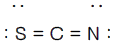
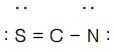
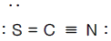
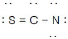
(정답률: 81%)
3. 다음 물질의 Ka 값이 아래와 같을 때, 다음 중 염기의 세기가 가장 큰 것은?
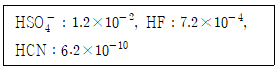
- HSO4-
- SO42-
- F-
- CN-
(정답률: 74%)
4. 다음 설명 중 틀린 것은?
- 특별한 조건에서 용액의 최대 용해도를 초과한 용액을 과포화 되었다고 한다.
- 어떤 주어진 온도에서 최대로 녹을 수 있는 용질의 양을 포함하는 용액을 포화 되었다고 한다.
- 일반적으로 고체화합물의 용해도는 용액의 온도가 올라가면 감소한다.
- 용액의 농도가 용액의 최대 용해도보다 적을 때는 불포화 되었다고 한다.
(정답률: 84%)
5. 반쪽 반응식을 이용하여 산화환원반응의 계수를 맞추는 방법에 대한 설명 중 틀린 것은?
- 산화 및 환원 반쪽반응의 원자량을 맞춘다.
- 산화와 환원의 반쪽반응을 모두 쓴다.
- 계수를 사용하여 각 반쪽반응에 원자의 개수를 맞춘다.
- 잃은 전자의 숫자와 얻은 전자의 숫자가 같도록 산화 및 환원 반쪽반응에 정수배한다.
(정답률: 76%)
6. 15℃ 에서 물의 이온화상수 Kw = 0.45 x 10-14 이다. 15℃ 에서 물 속의 H3O+ 의 농도(M)는?
- 1.0 x 10-7
- 1.5 x 10-7
- 6.7 x 10-8
- 4.2 x 10-15
(정답률: 76%)
7. 배의 철 표면이 녹스는 것을 방지하기 위하여 종종 마그네슘 판을 붙인다. 이 작업을 하는 이유는?
- 마그네슘이 철 보다 더 좋은 산화제이므로 마그네슘이 더 산화되기 쉽다.
- 마그네슘이 철 보다 더 좋은 산화제이므로 마그네슘이 더 환원되기 쉽다.
- 마그네슘이 철 보다 더 좋은 환원제이므로 마그네슘이 더 산화되기 쉽다.
- 마그네슘이 철보다 더 좋은 환원제이기 때문에 마그네슘이 더 환원되기 쉽다.
(정답률: 84%)
8. 다음 반응식을 참고하여 12.5g CaO 와 75.0g HClO4 의 반응식으로부터 생성되는 Ca(ClO4)2의 g 수를 계산하면? (단, Ca의 원자량은 40.0amu 이며, Cl 의 원자량은 35.5amu 이다.)
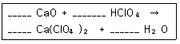
- 19.9g
- 26.7g
- 39.9g
- 53.3g
(정답률: 69%)
9. 다음 표의 (ㄱ), (ㄴ), 그리고 (ㄷ)에 들어갈 숫자를 순서대로 나열한 것은?
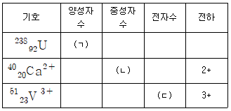
- 238, 20, 20
- 92, 20, 20
- 92, 40, 23
- 238, 40, 23
(정답률: 75%)
10. 납 원자 2.55 x 1023 개의 질량은 얼마인가? (단, 납의 몰 질량은 207.2 g/mol 이다.)
- 87.8g Pb
- 488.2g Pb
- 878.8g Pb
- 48.8g Pb
(정답률: 77%)
11. 용접 원료로 사용되는 어떤 화합물이 탄소와 수소만을 포함하고 있다. 이 화합물의 시료 약간을 산소 속에서 완전히 태워 1.69g 의 CO2 와 0.346g 의 물만을 얻었다. 연소 되기 전의 이 화합물의 실험식은 무엇인가?
- C2H
- CH
- CH2
- CH3
(정답률: 50%)
12. 질소와 수소가 생성되는 암모니아의 반응은 다음과 같다. 이 계가 일정부피의 용기에서 평형에 있다. 만약에 용기의 부피를 감소시키면 어떻게 되는가?
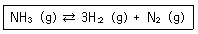
- 평형이 왼쪽으로 이동
- 평형이 오른쪽으로 이동
- 평형이 이동하지 않음
- 평형이 양쪽으로 이동
(정답률: 70%)
13. 아지드화나트륨(NaN3)은 박테리아를 죽이기 위하여 가끔 물에 쓰인다. 0.010M NaN3 용액에서 아지드화수소산(HN3)의 농도를 나타내는 식은? (단, HN3의 Ka값은 1.9 x 10-4이고, Kw(=[H+][OH-])는 물의 해리상수이다.)
- √ (Kw x 0.01)/(1.9 x 10-4)
- √ Kw/1.9 x 10-4)
- √ Kw x 1.9 x 10-4) x 0.01
- √ Kw/1.9 x 10-4) x 0.01
(정답률: 40%)
14. 이성질체에 대한 설명 중 틀린 것은?
- 동일한 분자식을 가진다.
- 실험식이 다른 물질이다.
- 구조가 다른 물질이다.
- 물리적 성질이 다른 물질이다.
(정답률: 85%)
15. 어떤 반응의 평형상수를 알아도 예측할 수 없는 것은?
- 평형에 도달하는 시간
- 어떤 농도가 평형조건을 나타내는지 여부
- 주어진 초기 농도로부터 도달할 수 있는 평형의 위치
- 반응이 진행되는 정도
(정답률: 75%)
16. 7.22g 의 고체 철(몰 질량=55.85)을 산성용액 속에서 완전히 반응시키는데 미지 농도의 KMnO4 용액 187ml 가 필요하였다. KMnO4 용액 의 몰농도(M)는? (단, 이때 미 완결 반응식은 H+ (aq) + Fe(s) + MnO4-(aq) → Fe3+(aq) + Mn2+(aq) + H2O(L) 이다.)
- 0.41
- 0.68
- 0.82
- 1.23
(정답률: 25%)
17. 다음 다원자 이온에 대한 명명 중 옳지 않은 것은?
- CH3COO- : 아세트산 이온
- NO3- : 질산이온
- SO32- : 황산이온
- HCO3- : 탄산수소이온
(정답률: 83%)
18. 다음 산화/환원 반응에서 산화되는 물질은 무엇인가?
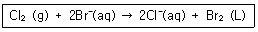
- Br-
- Cl2
- Br2
- H2O
(정답률: 81%)
19. 다음 유기물의 명명법 중 틀린 것은?
- CH3COOH : 아세트산
- HOOCCOOH : 옥살산
- CCl2F2 : 클로로플루오로 메탄
- CH2=CHCl : 염화비닐
(정답률: 74%)
20. 다음 중 불포화 탄화수소에 속하지 않는 것은?
- 알칸(alkane)
- 알켄(alkene)
- 알킨(alkyne)
- 아렌(arene)
(정답률: 83%)
2과목: 분석화학
21. 염의 용해도에서 0.10M Na2SO4 용액의 이온세기(ionic-strength)는?
- 0.10M
- 0.20M
- 0.25M
- 0.30M
(정답률: 66%)
22. 다음 중 화학평형에 대한 설명으로 옳은 것은?
- 화학평형상수는 단위가 없으며, 보통 K로 표시하고 K가 1보다 크면 정반응이 유리하다고 정의하며, 이 때 Gibbs 자유에너지는 양의 값을 가진다.
- 평형상수는 표준상태에서의 물질의 평형을 나타내는 값으로 항상 양의 값이며, 온도에 관계없이 일정하다.
- 평형상수의 크기는 반응속도와는 상관이 없다. 즉 평형상수가 크다고 해서 반응이 빠름을 뜻하지 않는다.
- 물질의 용해도 곱(solubility product)은 고체 염이 용액 내에서 녹아 성분 이온으로 나뉘는 반응에 대한 평형상수로 흡열반응은 용해도 곱이 작고, 발열반응은 용해도 곱이 크다.
(정답률: 74%)
23. 역 적정이 EDTA 적정에서도 사용되어 과량의 EDTA를 금속 시료용액에 첨가하고 남아 있는 EDTA를 역적정한다. 이 때 사용되는 역 적정 금속이온으로 가장 적당한 것은?
- Ca2+(Kf=5.0 x 1010)
- Cu2+(Kf=6.3 x 1018)
- Mg2+(Kf=4.9 x 108)
- Mn2+(Kf=6.2 x 1013)
(정답률: 67%)
24. 다음 산화환원 지시약에 대한 설명 중 틀린 것은?
- 분석하고자 하는 이온과 결합했을 때 산화된 상태와 환원된 상태의 색이 달라야 한다.
- 당량점에서의 전위와 지시약의 표준환원전위(Eo)가 비슷한 것을 사용해야 한다.
- 변색범위는 주로 E = Eo + 1/n volt 이다. (단, Eo 는 표준환원전위, n는 전자수이다.)
- 지시약은 주로 이중 결합들이 콘주게이션(conjugated) 된 유기물이다.
(정답률: 75%)
25. 특정 화학종이 녹아 있는 수용액의 전위차를 측정하기 위하여 두개의 백금 전극이 아래 그림과 같이 담겨있다. 그림을 옳게 표시한 것은 어느 것인가?
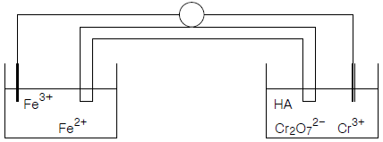
- Pt(s), Fe2+(aq), Fe3+(aq) : Cr2O72-(aq), Cr3+(aq), HA(aq), Pt(s)
- Pt(s) : Fe2+(aq), Fe3+(aq)｜Cr2O72-(aq), Cr3+(aq), HA(aq) : Pt(s)
- Pt(s)｜Fe2+(aq), Fe3+(aq)∥Cr2O72-(aq), Cr3+(aq), HA(aq)｜Pt(s)
- Pt(s)∥Fe2+(aq), Fe3+(aq)｜Cr2O72-(aq), Cr3+(aq), HA(aq)∥Pt(s)
(정답률: 76%)
26. EDTA에 대한 설명 중 옳지 않은 것은?
- EDTA 는 이온의 전하와는 상관없이 금속 이온과 강하게 1:1로 결합한다.
- EDTA 적정법은 물의 경도를 측정할 때 널리 사용된다.
- EDTA 는 Li+, Na+, K+ 와 같은 1가 양이온들과도 안정한 착물을 형성한다.
- EDTA 적정 시 금속 지시약은 EDTA 보다는 금속이온과 약하게 결합해야 한다.
(정답률: 72%)
27. 성분 이온 중 한가지 이상이 용액 중에 들어있는 경우 그 염의 농도가 감소하는 현상을 공통이온 효과라고 한다. 다음 중 공통이온 효과와 가장 관련이 있는 원리[법칙]는?
- 파울리(Pauli)의 배타원리
- 비어(Beer)의 법칙
- 패러데이(Faraday) 법칙
- 르 샤틀리에(Le Chatelier) 원리
(정답률: 75%)
28. 0.1M 금속 Mn+ 용액 50ml를 0.1M EDTA(Ethylene Diamine Tetra-acetic Acid, H4Y)로의 적정과정에 대한 설명 중 올바른 것은?
- 당량점 이전의 용액에는 과량의 MYn-4가 남아 있다.
- 당량점에서는 [Mn+]=[EDTA]로 이 용액은 MYn-4 를 녹인 용액과는 다른 상태이다.
- 당량점 이후에 모든 금속이온은 MYn-4 형태로 존재하며, 이 때 유리 EDTA의 농도는 적정에 첨가한 EDTA의 농도와 같다.
- 적정의 종말점 검출방법으로는 금속이온 지시약법, 수은 전극법, pH 전극법, 이온 선택성 전극법 등이 이용된다.
(정답률: 54%)
29. 다음의 자료를 참조하여 가장 강력한 산화제와 가장 강력한 환원제는 어떤 것인가?
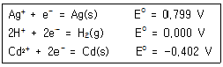
- 가장 강력한 산화제 : Ag+ , 가장 강력한 환원제 : Ag(s)
- 가장 강력한 산화제 : H+ , 가장 강력한 환원제 : H2(g)
- 가장 강력한 산화제 : Cd2+ , 가장 강력한 환원제 : Ag(s)
- 가장 강력한 산화제 : Ag+ , 가장 강력한 환원제 : Cd(s)
(정답률: 72%)
30. 다음 완충용액에 대한 설명 중 옳지 않은 것은?
- 완충용액(세기) β는 양수이며, β의 값이 클수록 pH 변화에 더 잘 견딘다.
- 완충용액은 pH=pKa (즉, [HA] = [A-])일 때 pH 변화를 막는데 가장 효과적이다.
- 완충용액의 pH 는 이온세기와 온도에 의존하지 않는다.
- 원하는 pH 에 가장 근접한 pKa 값을 갖는 완충제를 선택해야 한다.
(정답률: 74%)
31. 다음 농도(Concentration)에 대한 설명 중 옳은 것은?
- 몰랄 농도[m]는 온도에 따라 변하지 않는다.
- 몰랄 농도는 용액 1Kg 중 용질의 몰수이다.
- 몰 농도[M]는 용액 1Kg 중 용질의 몰수이다.
- 몰 농도는 온도에 따라 변하지 않는다.
(정답률: 65%)
32. 0.1M 의 과망간산 칼륨이 황산철(II)을 적정하기 위하여 산성용액에서 사용되었다면 과망간산 칼륨의 노르말농도(N)는 얼마인가?
- 0.1
- 0.3
- 0.4
- 0.5
(정답률: 47%)
33. 산화-환원 적정에서 산화제 자신이 지시약으로 작용하는 산화제는?
- 세륨 이온(Ce4+)
- 요오딘(I2)
- 과망간산 이온(MnO4-)
- 중크롬산 이온(Cr2O72-)
(정답률: 75%)
34. 다음 산/염기에 대한 설명 중 옳지 않은 것은?
- 산은 용액 중에서 H3O+(Hydronium ion) 농도를 증가시키는 물질이며, 염기는 H3O+ 의 농도를 감소시키거나 OH-(수산화 이온)의 농도를 증가시키는 물질이다.
- 다 염기성 산은 여러 개의 산 해리상수를 가지며, 해리상수가 클수록 강한 산성을 나타내다.
- 순수한 물의 경우 물의 해리상수(pKw=14)로부터 pH를 계산할 수 있다.
- 약산의 짝염기는 강한 산으로 완충용액의 제조에 이용된다.
(정답률: 71%)
35. 2,0 mg의 유기물 시료를 연소시켜 4.4mg 의 이산화 탄소(CO2) 기체를 얻었다. 이 유기물 중 탄소(C)의무게 백분율(%)은?
- 30
- 40
- 50
- 60
(정답률: 62%)
36. EDTA 적정에 사용되는 금속이온 지시약으로만 되어 있는 것은?
- 페놀프탈레인, 메틸오렌지
- 페놀프탈레인, EBT(Eriochrome Black T)
- EBT(Eriochrome Black T), 크실레놀 오렌지(Xylenol Orange)
- 크실레놀 오렌지(Xylenol Orange), 메틸오렌지
(정답률: 71%)
37. 다음 갈바니 전지의 line diagram에 대한 가장 올바른 설명은?
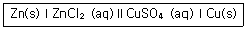
- Zn(s)에서 환원반응이 일어난다.
- 가운데의 두 수직선(∥)은 상 경계(phase boundary)를 의미한다.
- 전자는 Zn(s)에서 도선을 따라 Cu(s)으로 흐른다.
- 오른쪽 Cu2+ 용액은 산화된다.
(정답률: 78%)
38. 구리이온을 전기석출하기 위하여 0.800A 를 15.2분 동안 유지하였다. 음극에서 석출된 구리의 질량과 양극에서 발생한 산소의 질량을 계산한 것은? (단, 구리 원자량은 63.5g, 산소 원자량은 16.0g 이다.)
- 구리(Cu) 질량 = 2.40g, 산소(O2) 질량 = 0.06⑤g
- 구리(Cu) 질량 = 2.40g, 산소(O2) 질량 = 0.6⑤g
- 구리(Cu) 질량 = 0.240g, 산소(O2) 질량 = 0.6⑤g
- 구리(Cu) 질량 = 0.240g, 산소(O2) 질량 = 0.06⑤g
(정답률: 57%)
39. 25℃ 0.10M KCl 용액의 계산된 pH 값에 가장 근접한 값은? (단, 0.10M 에서의 H+ 와 OH- 의 활동도 계수는 각각 0.83 과 0.76 이다.)
- 6.98
- 7.28
- 7.58
- 7.88
(정답률: 59%)
40. 아세트산의 산 해리 상수가 1.75 x10-5 일 때, pH 6.3의 완충용액을 만들기 위한 아세트산과 아세트산나트륨의 비율(아세트산/아세트산나트륨)은 얼마인가?
- 6.3/1.75
- 6.3/17.5
- 63/1.75
- 6.3/175
(정답률: 46%)
3과목: 기기분석I
41. 몰 흡광계수 (molar absorptivity)가 300M-1cm-1인 0.0⑤M 용액이 1.0cm 시료 용기에서 측정되는 흡광도(absorbance) 및 투광도(transmittance)는?
- 흡광도 = 1.5, 투과도 = 0.0316%
- 흡광도 = 1.5, 투과도 = 3.16%
- 흡광도 = 15, 투과도 = 3.16%
- 흡광도 = 15, 투과도 = 0.0316%
(정답률: 65%)
42. 분자 흡광도 측정에서 복잡한 스펙트럼을 분해하기 위한 가장 좋은 방법은?
- 좁은 슬릿 나비를 사용한다.
- 넓은 슬릿 나비를 사용한다.
- 광원의 세기를 장가시킨다.
- 광원의 세기를 감소시킨다.
(정답률: 73%)
43. 다음 중 불꽃 원자흡수분광법이 방출분광법 보다 감도가 더 좋은 이유를 가장 잘 설명한 것은?
- 도플러 효과 때문에 흡수선의 선폭이 방출선보다 항상 훨씬 더 넓기 때문
- 보통의 불꽃보다 속빈음극방전등이 복사선 출력이 훨씬 더 크기 때문
- 흡수법에 사용되는 검출기가 방출법에 사용되는 검출기보다 감도가 훨씬 더 좋기 때문
- 불꽃 온도에서 바닥상태 원자의 수가 들뜬상태 원자의 수보다 훨씬 더 많기 때문
(정답률: 68%)
44. 유도결합 플라즈마(ICP) 원자방출 분광법에 사용되는 원자화 방법이 아닌 것은?
- Ar 플라즈마
- Dc 플라즈마
- 수소 산소 불꽃
- 스파아크
(정답률: 59%)
45. 원자화 원자분광광도계의 바탕 보정 방법이 아닌 것은?
- 중수소 바탕 보정법
- 자체반전(Smitth-Hieftje) 바탕 보정법
- 계측법 바탕 보정법
- Zeeman 바탕 보정법
(정답률: 52%)
46. 다음 화합물 해당원소의 1H 또는 13C NMR 스펙트럼의 봉우리 위치를 올바르게 설명한 것은 무엇인가?
- 벤젠의 수소 : 4 ~ 5 ppm 내에서 나타남
- 벤젠의 탄소 : 160 ~ 210 ppm 내에서 나타남
- 아세톤의 수소 : 4 ~ 6 ppm 내에서 나타남
- 아세톤의 카르보닐 탄소 : 190 ~ 220 ppm 내에서 나타남
(정답률: 57%)
47. 다음은 CO2 의 기준진동을 나타낸다. 어느 진동 mode 가 IR spectrum에서는 관측이 되지 않고, Raman Spectrum 에서 관측이 되는가? (단, ○ : 산소, ● : 탄소를 나타낸다.)
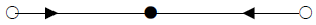
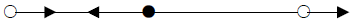
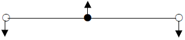
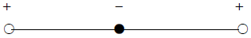
(정답률: 50%)
48. 1mm 당 1,450개의 홈을 가지고 있는 echellette 회절발에 법선에 대하여 48도의 입사각으로 다색광을 비추었다. 반사각 +10도에서 나타나는 복사선의 1차 반사에 대한 파장(nm)을 계산한 값은?
- 374
- 513
- 632
- 748
(정답률: 46%)
49. Grating(격자)을 이용하여 파장을 분리하는데 이 때 사용되는 빛의 물리적 성질은?
- 회절
- 반사
- 굴절
- 산란
(정답률: 71%)
50. 다음 중 X-선 형광분광법에서 나타나는 매트릭스(matrix) 효과가 아닌 것은?
- 증강효과
- 흡수효과
- 반전효과
- 산란효과
(정답률: 60%)
51. 유도결합 플라즈마(ICP) 원자방출 분광법은 불꽃/전열화 원자흡수법과 비교하여 여러 가지 장점을 가지고 있다. 다음 설명 중 옳지 않은 것은?
- 동시 다 원소 분석에 용이하다.
- 플라즈마의 높은 온도로 인하여 원소 상호간의 방해가 적다.
- 아르곤의 이온화로 분석물의 이온화에 의한 방해가 적다.
- 화학적 방해와 매트릭스 효과가 불꽃/전열화 원자흡수법 보다 크다.
(정답률: 71%)
52. 불꽃 원자흡수 분광법에 의해 식품 중의 칼슘(Ca)을 정량 할 때 스트론튬(Sr)이나 란타넘(La)을 가하는 주된 이유는?
- 식품 내의 인산염으로부터의 분광학적인 방해를 줄이기 위해서
- 식품 내의 음이온 특히 인산염으로부터의 화학적 방해를 줄이기 위해
- 스트론튬(Sr)이나 란타넘( La)이 불꽃 중에서 안정한 산화칼슘이 형성되도록 도와주기 위해서
- 식품 내에 존재하는 매트릭스 성분들의 분자가 생성되어 비특정 흡수를 일으키므로, 비특정 흡수를 막기 위해서
(정답률: 69%)
53. 다음 원자분광법 중 광원이 시료가 아닌 분광법은?
- 아르곤 플라즈마법
- 원자 방출법
- 아크법
- 원자 흡수법
(정답률: 47%)
54. 원자흡수분광법(AAS)에 사용되는 불꽃에 사용되는 가스를 짝지은 것이다. 이 중 사용되지 않는 것은?
- 천연가스-공기
- 아세틸렌-산화이질소
- 수소-공기
- 수소-산화이질소
(정답률: 65%)
55. 다음 광자 변환기(photon detector) 중 자외선 영역에 가장 좋은 감도를 나타내며, 매우 빠른 감응시간을 가지고 있는 것은?
- 규소다이오드 검출기(Silicon diode detector)
- 광전압전지(photoboltaic cell)
- 전하-쌍 장치(charge-coupled device)
- 광전증배관(photomultiplier tube)
(정답률: 68%)
56. 다음 기기분석 장비 중 분자분광을 이용하는 기기가 아닌 것은?
- UV/VIS 흡수분광기
- 적외선(IR) 흡수 분광기
- 핵자기 공명(NMR) 분광기
- 유도결합 플라즈마(ICP) 분광기
(정답률: 62%)
57. 플라즈마 광원의 방출 분광법에는 세 가지 형태의 고온 플라즈마가 있다. 다음 중 여기에 해당하지 않는 것은?
- 흑연전기로(GFA)
- 유도쌍 플라즈마(ICP)
- 직류 플라즈마(DCP)
- 마이크로파 유도 플라즈마(MIP)
(정답률: 76%)
58. 방출 및 화학발광법의 광학분광기기 부분장치 배열방식으로 가장 적당한 것은?
- 광원-파장선택기-시료잡이-광전검출기-신호처리장치
- 파장선택기-시료잡이-광원-광전검출기-신호처리장치
- 레이저-시료잡이-파장선택기-광전검출기-신호처리장치
- 광원과 시료잡이-파장선택기-광전검출기-신호처리장치
(정답률: 67%)
59. 분자흡수분광법과 비교하였을 때 분자발광(luminescence)법의 가장 큰 장점은 무엇인가?
- 검출한계는 몇 ppb 정도로 낮은 범위이다.
- 모체효과(매트릭스, matrix) 방해가 적다.
- 선형 농도 측정 범위가 작다.
- 흡수법보다 정량 분석에 널리 응용한다.
(정답률: 53%)
60. 원자 분광법에서 비소, 안티몬, 주석, 셀레늄 등을 함유한 액체시료를 원자화 장치에 도입할 때 검출 한계를 10 ~ 100배 정도 향상시킬 수 있는 방법은?
- 수소화물 발생(Hydride generation)
- 레이저 용발(Laser ablation)
- 스파아크 용발(Spark ablation)
- 클로우 방전(Glow discharge)
(정답률: 62%)
4과목: 기기분석II
61. 액체 크로마토그래피에서 기울기용리(gradient elution)란 어떤 방법인가?
- 단일 용매(이동상)를 사용하는 방법
- 컬럼을 기울여 분리하는 방법
- 2개 이상의 용매(이동상)를 다양한 혼합비로 섞어 사용하는 방법
- 단일 용매(이동상)의 흐름량과 흐름속도를 점차 증가시키는 방법
(정답률: 68%)
62. 비극성 정지상의 GC에서 다음 세가지 물질 즉, Propanol(끓는점 = 97℃), Butanol(끓는점 = 117℃), Pentanol(끓는점 = 138℃)를 분리했다. 설명이 맞는 것은?
- Propanol의 머무름 시간이 가장 짧다.
- Butanol의 머무름 시간이 가장 짧다.
- Pentanol의 머무름 시간이 가장 짧다.
- 머무름 시간은 세가지 모두 동일하다.
(정답률: 78%)
63. 이온선택성 전극방법의 특징이 아닌 것은?
- 직선적 감응의 넓은 범위
- 파괴성
- 짧은 감응시간
- 색깔이나 혼탁도에 영향을 받지 않음
(정답률: 73%)
64. 액체 크로마토그래피 컬럼의 단수(number of plates) N 만을 변화시켜 분리능(Rs)을 2배로 증가시키기 위해서는 어떻게 하여야 하는가?
- 단수 N이 2배로 증가해야 한다.
- 단수 N이 3배로 증가해야 한다.
- 단수 N이 4배로 증가해야 한다.
- 단수 N이 √2 배로 증가해야 한다.
(정답률: 76%)
65. HCl을 NaOH로 적정 시 conductance의 변화를 바르게 나타낸 것은? (단, Y축은 conductance, X 축은 가한 NaOH의 양이다.)
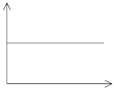
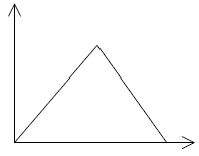
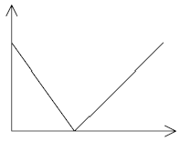
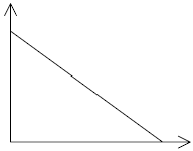
(정답률: 70%)
66. 질량분석법에 기체 상태로 화합물을 이온화 시키는 방법은 전자 충격법과 화학적 이온화법이 많이 이용되고 있다. 이 방법들에 대한 설명 중 옳지 않은 것은?
- 전자 충격법은 토막내기 반응이 일어나 분자이온 봉우리를 쉽게 나타낸다.
- 전자 충격법은 기화하기 전에 열분해가 일어날 수 있다.
- 전자 충격법 스펙트럼보다 화학적 이온화법 스펙트럼이 단순하다.
- 화학적 이온화법 스펙트럼은 M+1 과 M-1 봉우리가 나타난다.
(정답률: 50%)
67. 시차주사 열량법(DSC)으로부터 얻을 수 있는 정보가 아닌 것은?
- 유리전이 온도
- 결정화도
- 수분 함량
- 시료의 순도
(정답률: 66%)
68. 전기전도도법을 이용하여 미지의 염산(HCl) 용액을 수산화나트륨(NaOH)으로 적정할 때, 각 이온의 전도도 변화 곡선에 대한 설명 중 틀린 것은?
- H3O+에 의한 전도도는 당량점까지 일정하게 감소한다.
- OH-에 의한 전도도는 당량점 이후부터 일정하게 증가한다.
- Na+에 의한 전도도는 일정하게 증가한다.
- Cl-에 의한 전도도는 일정하게 증가한다.
(정답률: 52%)
69. C18 컬럼을 사용하고 메탄올/아세토니트릴 용매를 50:50 비율로 혼합하여 특정 화합물을 분리하려 한다. 이 때 용리 속도가 너무 느려서 빠르게 하는 방법으로 다음 중 가장 적당한 것은?
- 메탄올의 혼합량을 증가시킨다.
- 아세토니트릴의 혼합량을 증가시킨다.
- 이동상의 용존 기체를 제거한다.
- 이동상의 흐름량을 감소시킨다.
(정답률: 40%)
70. 다음 기체-고체 크로마토그래피(GSC)의 가장 기본적인 분리 메커니즘은?
- 분배
- 흡착
- 이온쌍
- 크기별 배제
(정답률: 70%)
71. 다음 중 전위차법에 사용하는 이상적인 기준전극의 조건이 아닌 것은?
- 시간이 지나도 일정한 전위를 나타내어야 한다.
- 반응이 비가역적이어야 한다.
- 온도가 주기적으로 변해도 과민반응을 나타내지 않아야 한다.
- 작은 전류가 흐른 뒤에도 원래의 전위로 되돌아와야 한다.
(정답률: 76%)
72. 일반적으로 열분석법은 온도 프로그램으로 가열하면서 물질과 또는 그 반응 생성물의 물리적 성질을 온도함수로 측정하는 분석법이다. 중합체를 시차 열법 분석(DTA)을 통해 분석 할 때 발열반응에서 측정할 수 있는 것은?
- 유리전이 과정
- 녹는 과정
- 분해과정
- 결정화 과정
(정답률: 64%)
73. 단 높이를 나타내는 van Deemter 식을 올바르게 나타낸 것은? (단, H = 단 높이, A = 다중흐름통로, B = 세로확산, C = 질량이동, u = 이동상의 선형 흐름 속도이다.)
- H = A + B + C
- H = A/u + Bu + C
- H = A + B/u + C/u
- H = A + B/u + Cu
(정답률: 73%)
74. 세 전극(기준, 작업, 보조) 전지의 조절 전위 전기분해에 대한 설명 중 옳지 않은 것은?
- 작업전극과 기준전극 사이의 전압은 일정 전위기(potentiostat)에 의해서 일정하게 유지된다.
- 작업전극과 보조전극 간에는 무시할 수 있을 만큼의 작은 전류가 형성된다.
- 세 전극전지를 쓰면 일정한 환원전극 전위 유지 및 전기분해의 선택성을 높일 수 있다.
- 기준전극 전위는 저항전위, 농도차 분극, 과 전위의 영향을 받지 않는다.
(정답률: 38%)
75. 전기화학에서 널리 사용되는 포화 카로멜 기준전극의 전극 반응은?
- 2H+ + 2e- ↔ H2(g)
- AgCl(s) + e- ↔ Ag(s) + Cl-
- Fe(CN)63+ + e- ↔ Fe(CN)64-
- Hg2Cl2(s) + 2 e- ↔ 2Hg(L) + 2Cl-
(정답률: 47%)
76. 열무게 분석법(TGA)를 이용하여 시료 CaC2O4ㆍH2O 를 비활성 기체 속에서 5℃/min 상승시키면서 980℃ 까지 온도를 올렸을 때 서모그램 상에 나타나는 수평영역은 여러 칼슘화합물의 안정한 온도영역을 나타낸다. 두 번째 높은 온도(420~660℃)에서 나타나는 수평영역은 어떤 화합물을 나타내는가?
- CaC2O4ㆍH2O
- CaCO3
- CaO
- CaC2O4
(정답률: 55%)
77. 다음 line diagram 의 전지에서 이론적인 전위(V)는?
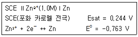
- -1.066
- -1.007
- -0.948
- -0.519
(정답률: 71%)
78. 질량 분석계로 분석 할 경우 상대세기(abundance)가 거의 비슷한 두개의 동위원소를 갖는 할로겐 원소는 어느 것인가?
- Cl(Chlorine)
- Br(bromine)
- F(Fluorine)
- I(Iodine)
(정답률: 75%)
79. 질량 분석법에는 질량 분석관이 이온발생원에서 생성된 이온들을 질량/전하 비에 따라 분리를 하게 된다. 질량 분석관으로 주로 사용하지 않는 것은?
- 사중극 질량분석관(Quadrupole Analyzer)
- 이중 초점 섹터분석계(Double-Focusing Sector Spectrometer)
- 비행 시간형 분석계(Time-of-Flight Spectrometer)
- 단색화 분석관(Monochromato Spectrometer)
(정답률: 70%)
80. 질량 분석기로 C2H4+(MW=28.0313)과 CO+(MW=27.9949)의 봉우리를 분리하는데 필요한 분리 능은 약 얼마인가?
- 770
- 1,170
- 1,570
- 1,970
(정답률: 62%)
684g ÷ 342g/mol = 2 mol
따라서, 이 용액의 몰농도는 전체 몰수(2 mol)를 전체 부피(4.0L)로 나눈 값이다.
M = 2 mol ÷ 4.0 L = 0.50 M
따라서, 정답은 "0.50M" 이다.